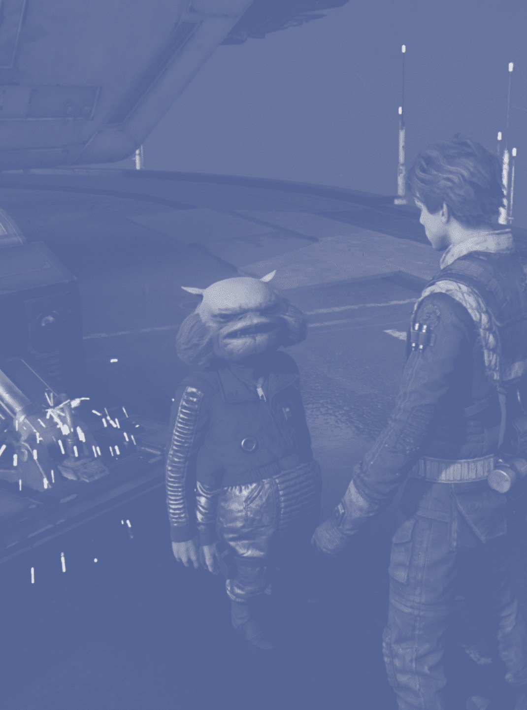
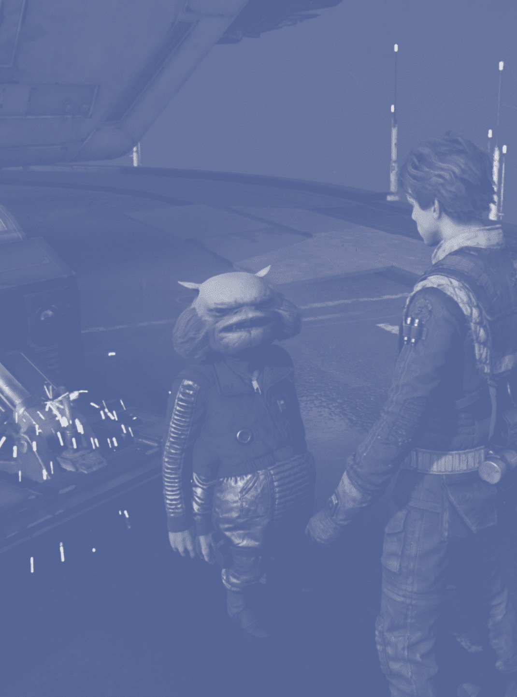

Un varón humano, Cal Kestis sirvió a la Orden Jedi como un Padawan antes de que la Orden 66 fuera activada. Después de la caída de los Jedi, Kestis fue a servir al Gremio Chatarrero como un instalador.
Él tomó posesión de un sable de luz y lo usó en combate. También sabía como usar la Fuerza adecuadamente y era capaz de empujar con la Fuerza, jalar con la Fuerza y Estasis de la Fuerza para mayor efecto contra el Imperio.
BD-1 fue un droide unidad BD que acompañó al antiguo Padawan Jedi Cal Kestis durante el tiempo posterior a la Orden 66.
Diseñado para ayudar con la exploración en lugares remotos y peligrosos, BD-1 estaba entusiasmado con la investigación y la recopilación de datos, pero a menudo ignoraba la autoconservación.
Cere Junda, una mujer humana sensible a la Fuerza, fue una antigua Caballero Jedi que ejerció de mentora del Padawan Cal Kestis en los caminos de la Fuerza durante el surgimiento del Imperio Galáctico.
Durante el tiempo de la República Galáctica, Junda llevaba una túnica Jedi y un sable de luz de hoja verde. En la Era del Imperio, adquirió el sable de luz de hoja roja de su aprendiz, Trilla.
 

Greez Dritus fue un latero que vivió durante la Era Imperial. Trabajó para Cere Junda y fue el capitán de la Mantis Aguda. Era conocido por tener un mal hábito de juego, y se metió en problemas con los Vástagos de Haxion.
Manejaba con habilidad la Mantis Aguda transportando a Cal por toda la galaxia. Además era capaz de arreglar cualquier desperfecto de ésta.
Trilla Suduri, también conocida como la Segunda Hermana, fue una mujer humana sensible a la Fuerza que sirvió en la Inquisición durante el reinado del Imperio Galáctico.
Siendo entrenada en las artes Jedi, Suduri era una experta duelista de sables de luz y una de los cazadores de Jedi más mortales del Imperio. Sin embargo, el activo más fuerte de Suduri era su brillante intelecto.